한줄 요약 — 이 연구는 비가공 자연석의 불확실한 형상과 시공 누적오차를 사전 완성 설계가 아니라 매 배치 후 다시 계획하는 문제로 바꾸고, HEAP의 LiDAR 재구성·형상 매칭·Bullet 안정성 검증·충돌 없는 파지를 통합해 40개 톤급 석재의 3×5 m 양면벽을 실현했지만 스캔·뒤집기와 구조 안전 검증은 아직 부분 수동이다.
1.연구 배경 및 동기
가공하지 않은 지역 석재를 현장에서 읽고 적응적으로 쌓는 대형 로봇 시공
건식 석벽은 시멘트나 정밀 절삭 없이 주변에서 얻은 돌을 맞물려 구조를 만든다. 자재의 embodied energy가 낮고 지역 재료를 활용할 수 있지만, 돌마다 형상·질량·접촉면이 달라 숙련 석공이 매번 적합한 돌과 방향을 판단해야 한다. 산업용 로봇이 규격 부재를 반복 배치하는 방식이나 모든 돌의 최종 자세를 미리 계산하는 방식은 이 재료 불확실성과 현장 침하를 다루기 어렵다.
논문은 높은 가반하중과 거친 지형 이동성을 가진 12톤 보행 굴착기 HEAP를 현장 제작기로 사용한다. 캐빈 LiDAR로 주변·재료·시공 중 벽을 지도화하고, 돌을 그리퍼로 들어 회전시키며 보이지 않던 전 표면을 디지털화한다. 기하 계획기는 설계자가 지정한 두 외측 목표면과 현재 벽의 상단을 기준으로 다음 돌의 위치·방향을 계산하고, 팔 계획기는 이를 잡아 충돌 없이 놓는다.
핵심은 on-the-fly 순차 계획이다. 비균질 부재의 작은 배치 오차와 침하가 누적되므로 완성벽의 모든 자세를 미리 고정하지 않는다. 한 돌을 놓은 뒤 LiDAR에서 실제 자세를 ICP로 보정하고, 수정된 as-built 형상을 다음 검색공간의 바닥으로 사용한다. 계획은 설계 의도를 유지하되 재료와 시공 현실에 매 단계 적응한다.
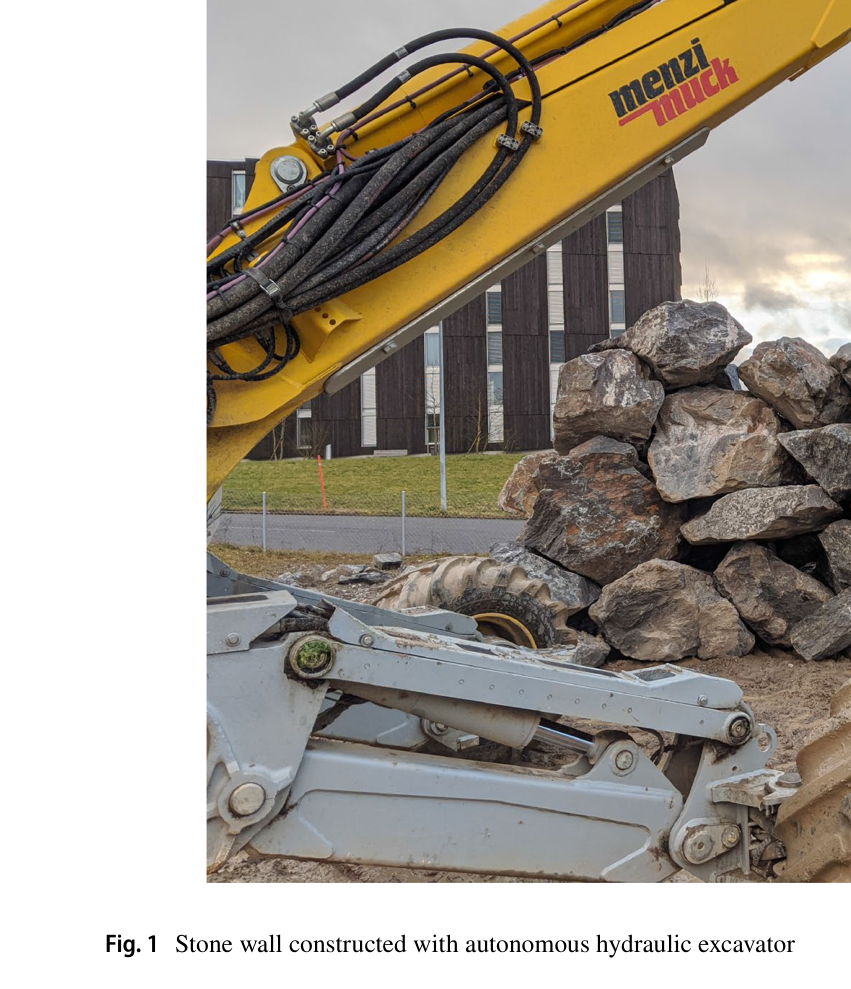
원문 Figure 1 · PDF p.2 — Fig. 1 Stone wall constructed with autonomous hydraulic excavator
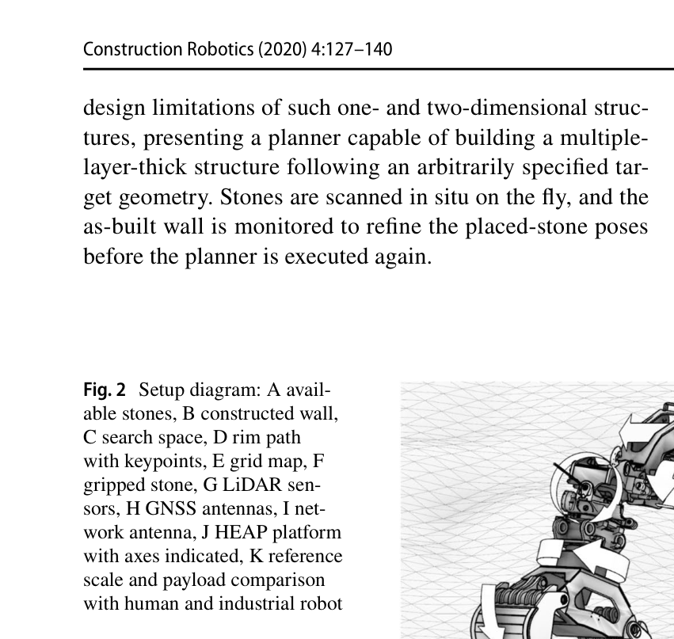
원문 Figure 2 · PDF p.3 — Fig. 2 Setup diagram: A avail- able stones, B constructed wall, C search space, D rim path with keypoints, E grid map, F gripped stone, G LiDAR sen- sors, H GNSS antennas, I net- work antenna, J HEAP platform with axes indicated, K reference scale and payload comparison with human and industrial robot
선행 연구의 한계
기존 비정형 석재 조립은 고정 산업용 로봇과 RGB-D 스캐너에 의존해 부재 크기, 벽 높이, 현장 이동 범위가 제한됐다.
선행 건식 적층 시스템은 수직 탑 또는 한 겹 벽에 머물렀고, 일부는 배치 후 침하를 갱신하지 않는 open loop에서 40% 성공률을 보고했다.
비가공 3D 형상의 조합 수는 매우 커서 모든 돌·모든 위치·모든 방향을 물리 시뮬레이션하는 brute force 계획이 실용시간 안에 끝나지 않는다.
표준화된 블록이나 발포재를 쓰는 현장 로봇 연구는 자연석 고유의 접촉·안정성·재료 재사용 문제를 회피했다.
이 연구의 기여
톤급 비가공 자연석을 탐지·파지·회전 스캔·재구성·배치하는 HEAP 기반 현장 시공 파이프라인을 통합했다.
석공 경험에서 얻은 두께비·안쪽 기울기 규칙과 FPFH-KNN 형상 매칭을 빠른 전처리로 사용해 백만 개 이상 후보를 수천 개로 축소했다.
ICP 접촉 정제, Bullet 물리 안정성, 목표면과 하부 공극 부피를 결합해 양면 자유형 벽의 다음 돌을 즉석 선택하는 계획기를 제안했다.
평균 757 kg의 gneiss 40개를 모두 사용해 높이 3 m, 길이 5 m의 양면 건식 석벽을 대형 이동 로봇으로 구축했다.
2.방법론 및 시스템 구성
HEAP는 총 23개 축, 3,000 kg을 9 m까지 들 수 있는 팔, 직교 배치한 VLP-16 두 대, GNSS·IMU·실린더 센서를 갖는다. 초기에는 돌을 서로 분리해 놓고 RANSAC으로 지면을 제거한 뒤 Euclidean clustering으로 개별 돌을 찾는다. 선택한 돌을 그리퍼로 들고 LiDAR 앞에서 일정 속도로 회전시키며 그리퍼 점을 제거하고, 여러 시점 점군을 합쳐 Poisson 표면 mesh를 만든다.
기하 계획기는 시공 중 벽의 상부를 가상 LiDAR와 surface reconstruction으로 연속면처럼 근사하고, 그 경계 rim path를 목표면과 만나는 검색 축으로 삼는다. 각 돌 mesh를 정리해 PCA 축, VSA 평면 패치, edge와 normal을 계산한다. FPFH가 비슷한 돌 edge와 rim 점을 먼저 찾고 석공 규칙으로 불안정 후보를 제거한 다음, ICP와 Bullet만 작은 후보 집합에 적용한다.
선택된 배치 자세와 현재 파지 자세 사이의 팔 동작은 다수 그리퍼 후보, 환경·자기 충돌, force closure를 검사하고 cubic Hermite spline으로 연결한다. 돌을 놓으면 장면 LiDAR와 돌 mesh의 ICP로 실제 자세를 다시 계산하고, 데이터베이스와 벽 모델을 갱신한 뒤 다음 돌 계획을 시작한다.
처리 파이프라인
1
현장 지도와 돌 인스턴스 탐지
GNSS-IMU 오도메트리와 LiDAR ICP 제약을 LaserSLAM 그래프에 융합한다. 자기 몸체 점을 제거한 지도에서 RANSAC 지면 평면을 빼고 Euclidean clustering으로 흩어 둔 돌을 개별 후보로 만든다.
2
그리퍼 회전 스캔과 mesh 생성
돌을 들어 두 VLP-16 앞에서 연속 회전시키고 알려진 그리퍼 형상을 필터링한다. 여러 방향 점군을 이어 Poisson surface reconstruction을 수행하고, 퇴화 삼각형과 분리 파편을 제거한다.
3
돌 속성과 벽 검색공간 구성
mesh 질량특성·centroid·PCA 주축을 계산하고 VSA로 표면 패치와 edge를 얻는다. 목표 외측면, 지면, 현재 벽 상부면 사이를 volumetric search space로 정의하고 rim path의 점과 법선을 표본화한다.
4
빠른 기하 후보 축소
돌 edge midpoint와 rim vertex의 회전불변 FPFH를 비교해 각 점에서 약 10개 최근접 형상만 남긴다. 돌 깊이/높이 비와 상부면 normal 규칙으로 얇은 veneer 및 바깥쪽으로 기운 후보를 제거한다.
5
정밀 접촉·안정성 평가
남은 각 자세를 ICP로 주변 돌 및 목표면에 맞추고, Bullet에서 제한 시간 안에 평형에 도달하지 못하거나 과도하게 움직인 후보를 버린다. 하부 공극과 외측 목표면 공극 부피의 결합 점수로 최종 배치를 고른다.
6
파지·배치·재계획
충돌·force closure를 통과한 그리퍼 자세와 배치 접근을 cubic Hermite spline으로 잇는다. 실제 배치 뒤 돌 자세를 ICP로 재측정해 as-built wall을 갱신하고 다음 돌의 검색을 다시 수행한다.
원문 수식과 의미
벽 깊이-높이 비 규칙
d/h>0.5
rim path 기준 돌 중심의 수평 깊이 d가 수직 높이 h의 절반보다 커야 하며, 가장 얇은 치수가 벽 깊이가 되는 불안정한 veneer 배치를 제거한다.
노출 상부면 normal이 벽 안쪽을 향하고 지나치게 가파르지 않은 후보만 허용해 이후 돌이 양쪽 벽 사이로 지지되도록 한다.
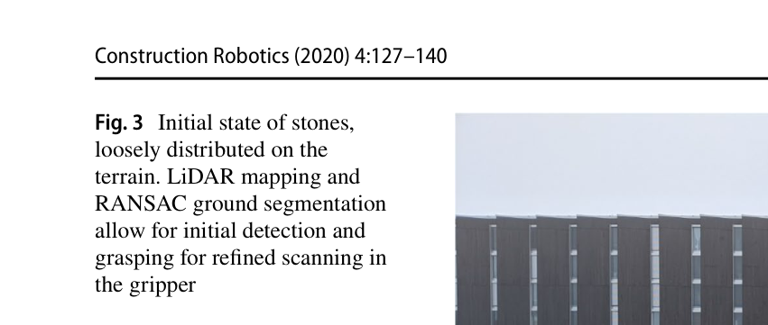
원문 Figure 3 · PDF p.5 — Fig. 3 Initial state of stones, loosely distributed on the terrain. LiDAR mapping and RANSAC ground segmentation allow for initial detection and grasping for refined scanning in the gripper
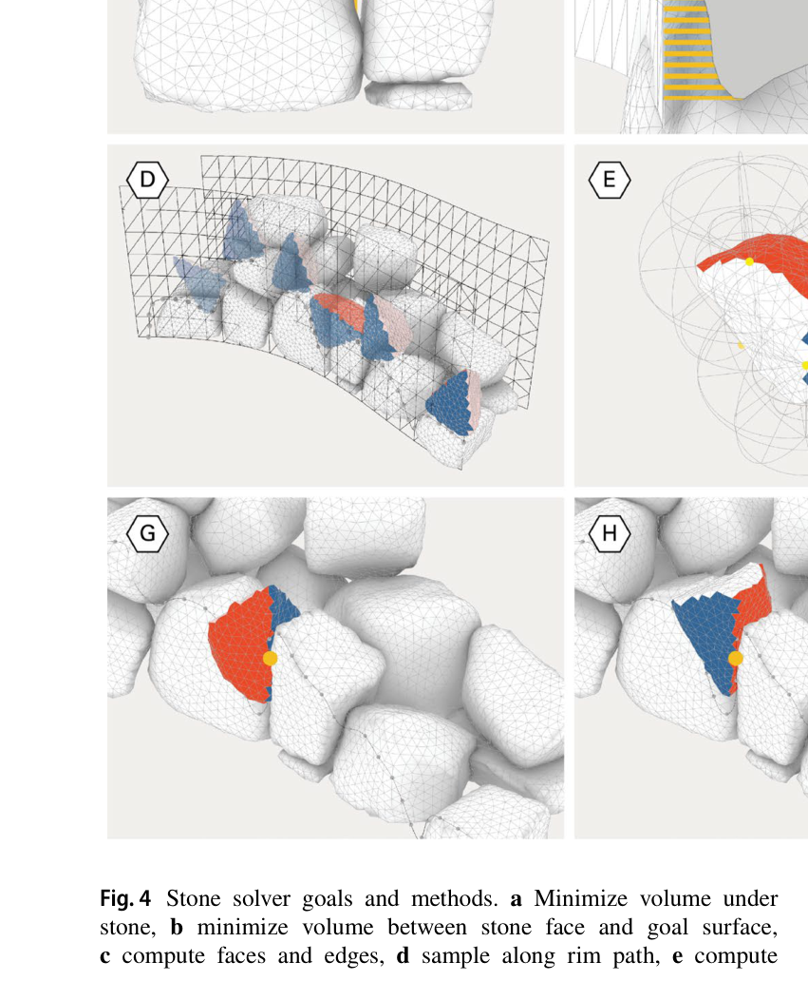
원문 Figure 4 · PDF p.6 — Fig. 4 Stone solver goals and methods. a Minimize volume under stone, b minimize volume between stone face and goal surface, c compute faces and edges, d sample along rim path, e compute
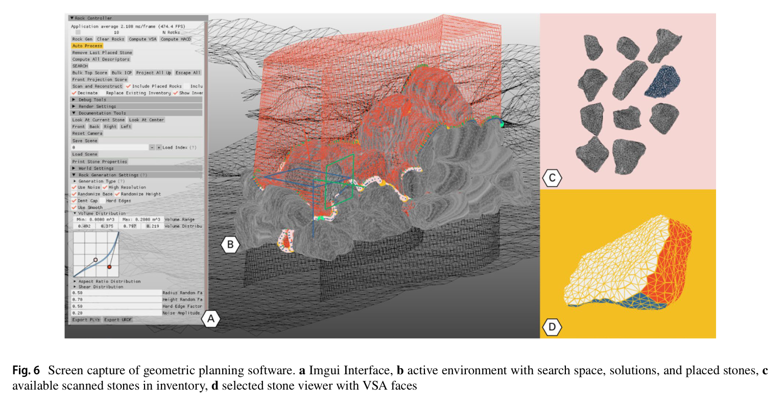
원문 Figure 6 · PDF p.8 — Fig. 6 Screen capture of geometric planning software. a Imgui Interface, b active environment with search space, solutions, and placed stones, c available scanned stones in inventory, d selected stone viewer with VSA faces
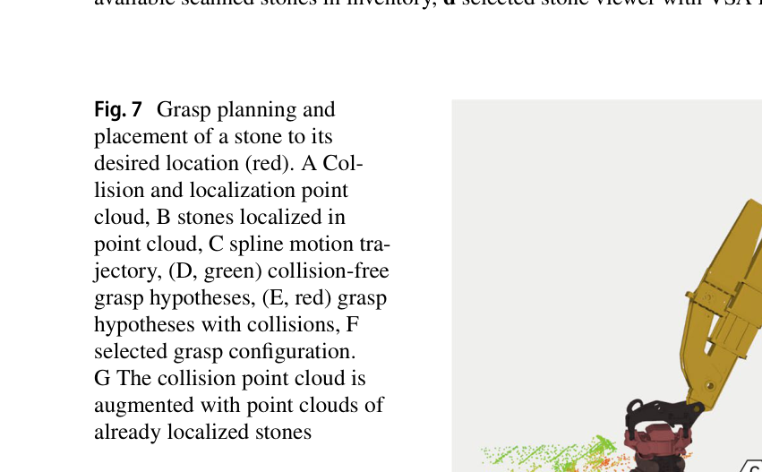
원문 Figure 7 · PDF p.8 — Fig. 7 Grasp planning and placement of a stone to its desired location (red). A Col- lision and localization point cloud, B stones localized in point cloud, C spline motion tra- jectory, (D, green) collision-free grasp hypotheses, (E, red) grasp hypotheses with collisions, F selected grasp configuration. G The collision point cloud is augmented with point clouds of already localized stones
3.핵심 기술
완전 형상을 얻는 active stone scanning
지면 위 한 방향에서 본 LiDAR 점군만으로는 접촉면과 후면이 비어 안정성 판단이 불가능하다. HEAP는 자체 팔을 스캐닝 턴테이블처럼 사용해 돌을 들고 회전시킨다. 그리퍼 geometry를 제거한 여러 시점 점군을 Poisson mesh로 바꾸므로 별도 고정 스캐너나 자재 운반 라인이 필요 없다.
스캔 mesh는 질량특성, PCA, VSA face, edge descriptor, 충돌과 물리 시뮬레이션의 공통 표현이다. 즉 한 번의 디지털화가 건축 배치와 로봇 동작 계획을 동시에 지지한다.
두 VLP-16을 서로 직교 배치해 캐빈 회전과 주행에서 점밀도 확보
돌을 연속 회전하고 그리퍼 점을 자기 모델로 제거
Poisson reconstruction과 ICP로 객체 mesh·pose 갱신
석공 지식으로 축소하는 조합 검색
계획기는 모든 후보에 고비용 물리 계산을 하지 않는다. 형상 유사성과 전통 석공 규칙처럼 싸고 배제력이 큰 검사를 앞에 배치하고, 접촉 정합·물리 안정성·공극 부피는 뒤에 적용한다. FPFH-KNN 하나만으로 백만 개가 넘는 edge-rim 조합이 수천 개 수준으로 감소했다.
이 설계는 휴리스틱을 임의 규칙으로 쓰는 데 그치지 않고 양면벽의 구조 논리와 연결한다. 충분한 벽 깊이, 안쪽으로 향한 상면, 외측 목표면 적합성은 다음 돌을 받칠 수 있는 시공 가능성을 동시에 보존한다.
FPFH 최근접 이웃 k≈10
d/h>0.5로 얇은 veneer 후보 제거
상면 normal의 안쪽 방향과 경사 제한
as-built 피드백 기반 순차 설계
비정형 돌은 계획 자세에 놓여도 접촉하면서 가라앉거나 돌아간다. 각 배치 뒤 실제 LiDAR와 mesh를 ICP로 맞춰 위치를 수정하고, 이 벽을 다음 검색공간의 하부 경계로 삼는다. 따라서 오차를 다음 단계에 숨기지 않고 설계 상태 자체를 다시 정의한다.
돌의 성질을 시작 전에 모두 알 수 없다는 조건에서도 매 단계 사용할 inventory와 현재 벽을 바탕으로 해를 찾는다. 논문의 실험은 시간을 줄이기 위해 모든 돌을 먼저 스캔했지만, 알고리즘 구조는 현장 도착·발견 순서에 따라 inventory가 늘어나는 운용도 허용한다.
한 돌 계획-배치-ICP 갱신 후 다음 돌 계획
목표면은 고정하되 내부 공극과 실제 상단 형상은 단계마다 변화
오차 누적을 open-loop 완성 배치 대신 폐루프 재계획으로 억제
기하 계획과 톤급 동작 계획의 결합
건축적으로 좋은 자세라도 그리퍼가 잡을 수 없거나 벽과 충돌하면 실행할 수 없다. 시스템은 6자유도 파지 후보의 force closure와 주변 점군 충돌을 검사하고, 파지 자세에서 배치 자세까지 Hermite spline을 구성한다. 배치 접근 방향도 raycasting으로 장애물 여유가 가장 큰 방향을 고른다.
그리퍼와 기존 벽을 포함한 점군 충돌검사
Bullet은 배치 후 평형을, 파지 계획기는 운반 중 실행 가능성을 검증
3,000 kg을 9 m까지 드는 HEAP 팔로 건축 규모 확보
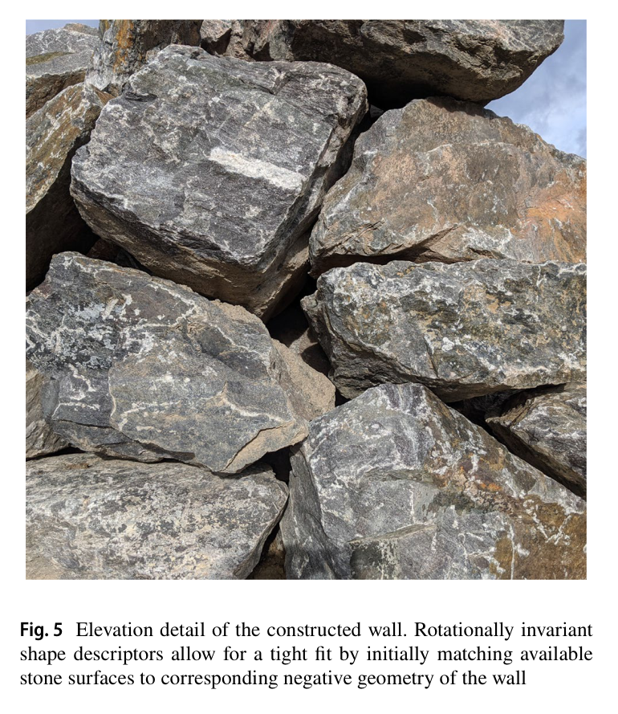
원문 Figure 5 · PDF p.7 — Fig. 5 Elevation detail of the constructed wall. Rotationally invariant shape descriptors allow for a tight fit by initially matching available stone surfaces to corresponding negative geometry of the wall
4.실험 결과
실험 환경·장비·데이터
12톤 HEAP 보행 굴착기, 23축, 최대 3,000 kg을 9 m까지 들어 올리는 유압 팔
돌을 지면에 느슨하게 분산해 LiDAR 지면 제거와 개별 군집화를 수행하고, 각각 들어 회전시키며 mesh를 만들었다.
실험 시공 속도를 높이고 초기부터 선택폭을 확보하기 위해 벽 시공 전에 40개 돌을 모두 스캔했다.
각 단계에서 기하 solver가 다음 자세를 선택하고 HEAP가 파지·운반·배치한 뒤, 실제 돌 자세를 ICP로 갱신하고 다음 단계를 시작했다.
Bullet 평형, 충돌 없는 팔 궤적, 외측 목표면 적합과 하부 공극을 통과한 해를 순차적으로 실행했다.
비교 기준
선행 open-loop 단층 석벽의 보고 성공률 40%와 달리 배치 후 자세를 매번 갱신하는 폐루프 구조
brute-force 백만 개 이상 조합 대 FPFH-KNN과 석공 휴리스틱을 먼저 적용한 수천 개 후보
규격 ashlar가 아닌 가공하지 않은 자연석을 100% 사용했으며 절단·드레싱 기반 접근과 개념적으로 비교
평가 지표
완성 벽 높이·길이·석재 수와 질량 범위
외측 벽면과 설계 목표면의 거리
석재당 solver 실행시간과 후보 축소 규모
사용 가능한 원재료의 실제 사용 비율과 배치 후 갱신 여부
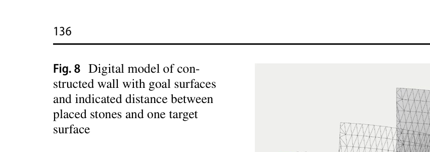
원문 Figure 8 · PDF p.10 — Fig. 8 Digital model of con- structed wall with goal surfaces and indicated distance between placed stones and one target surface
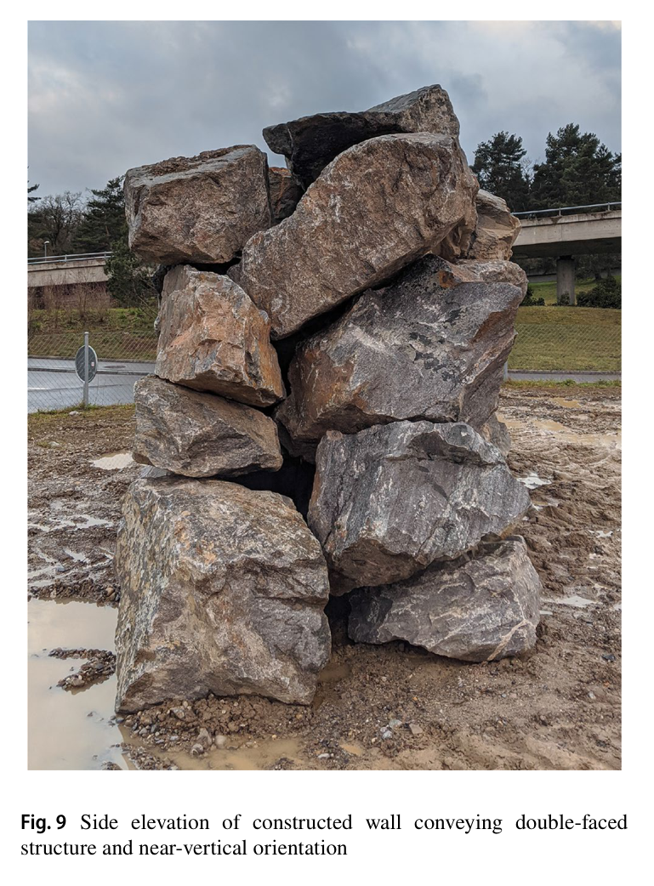
원문 Figure 9 · PDF p.10 — Fig. 9 Side elevation of constructed wall conveying double-faced structure and near-vertical orientation
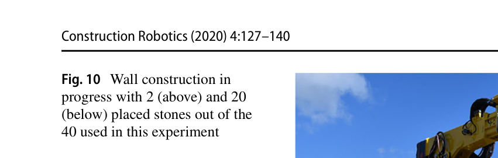
원문 Figure 10 · PDF p.11 — Fig. 10 Wall construction in progress with 2 (above) and 20 (below) placed stones out of the 40 used in this experiment
핵심 결과 해석
통합 시스템은 40개의 gneiss 자연석으로 높이 3 m, 길이 5 m의 양면 건식 석벽을 완성했다. 실험 절의 질량은 평균 757 kg, 230–1,584 kg 범위이며, 저자들은 당시 불규칙 석재로 자율 시공된 조적 구조 가운데 높이와 구성요소 수 모두 가장 큰 사례라고 기술한다. 벽의 외측면은 목표면에서 대체로 10 cm 안에 놓였고, 돌을 깎지 않은 채 가용한 40개를 모두 사용했다.
계획 계산은 i7-8750H 4.1 GHz·16 GB 노트북에서 돌 하나당 약 1분이었다. 실제 굴착기가 돌을 찾고 잡아 운반·배치하는 시간보다 짧게 solver를 끝내 작업 흐름을 막지 않는다는 설계 목표를 충족했다. FPFH-KNN은 백만 개를 넘는 가능한 돌 edge와 rim 점 조합을 수천 개로 낮춰 ICP와 Bullet 평가를 감당할 수 있게 했다.
결과는 완성벽의 단일 평균 오차보다 적응 과정의 성립을 보여준다. 2개와 20개 돌 단계의 중간벽에서 계속 다음 해를 찾았고, 매 배치 후 돌 자세가 다시 입력됐다. 반면 논문은 전체 시공시간, 자동 파지 성공률, 구조 하중시험을 수치로 보고하지 않아 생산성과 안전성을 사람 시공 또는 다른 로봇과 직접 비교할 수는 없다.
정량 결과
평가 항목
정량 결과
조건·맥락
원문 근거
완성벽 규모
높이 3 m × 길이 5 m
양면 비정형 건식 석벽
PDF p.9
사용 석재
40개, 평균 757 kg
실험 절 보고 범위 230–1,584 kg
PDF p.9
외측면 적합도
대체로 목표면 10 cm 이내
완성벽의 설계 외측 표면
PDF p.9
기하 solver 시간
석재당 약 1 min
i7-8750H 4.1 GHz, 16 GB, Ubuntu 18.04
PDF p.5
기하 후보 축소
>1,000,000 조합→수천 개
FPFH와 k≈10 KNN 전처리
PDF p.7
돌 깊이 규칙
d/h>0.5
얇은 veneer 자세 제거
PDF p.7
원석 운송 거리
40 km
시험장으로 운반한 quarry 위치
PDF p.12
실패 사례와 경계조건
실시간 동적 추적이 없어 돌을 뒤집을 때 LiDAR 누적 스캔만으로 객체 자세를 안정적으로 유지하기 어렵고, 실험에서는 사람이 뒤집기를 보조했다.
돌이 서로 닿은 더미가 아니라 느슨하게 분산된 초기 배치여서 RANSAC과 군집화의 가장 어려운 가림 조건을 회피했다.
기하적으로 맞고 Bullet에서 평형인 자세가 실제 하중 아래 장기 구조 안전을 보장하지 않으며, force-torque 기반 실물 검증이 없다.
완성벽 내부 공극은 원석의 비정형성을 흡수하지만 정량적 구조성능 대신 경험적 석공 규칙에 의존한다.
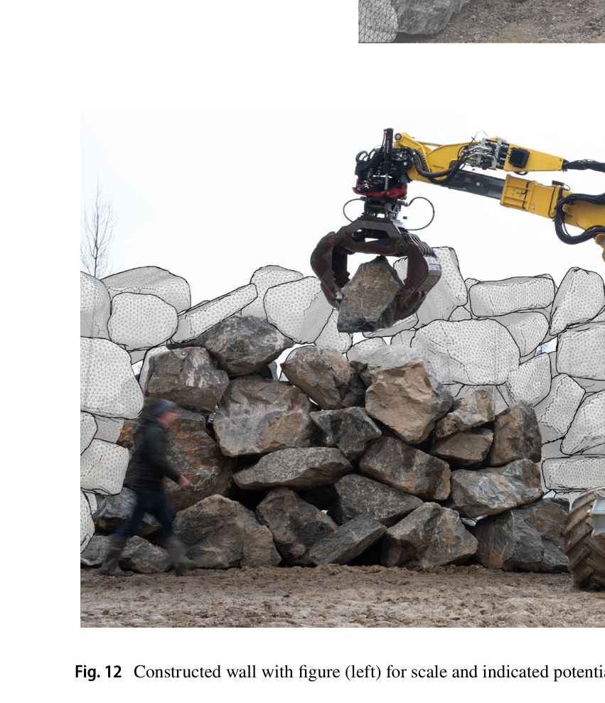
원문 Figure 12 · PDF p.12 — Fig. 12 Constructed wall with figure (left) for scale and indicated potential extensions
5.한계 및 향후 연구
현재 한계
LiDAR만으로 완전 mesh를 얻으려면 센서나 돌을 계속 움직여야 해 스캔 시간이 길고 뒤집기 중 동적 추적에 부적합하다.
돌을 처음부터 분리 배치하고 모두 사전 스캔한 실험 프로토콜은 실제 채석장·철거 더미의 가림과 순차 발견을 충분히 대표하지 않는다.
실제 돌 뒤집기와 일부 사용자 인터페이스 선택에 사람이 관여해 전체 공정이 완전 무인 폐루프는 아니다.
Bullet과 기하 규칙은 실물 접촉 마찰·변형·장기 하중을 직접 계측하지 않으며 완성 구조의 하중 안전성 시험도 없다.
향후 연구
RGB 카메라와 textured reconstruction을 추가해 석재 인스턴스를 시각 특징으로 인식하고 뒤집기 중 자세를 추적한다.
그리퍼 force-torque 센서와 능동 probing으로 놓인 돌과 완성 구조에 하중을 가해 안정성과 변형을 실물에서 측정한다.
돌 더미에서의 instance segmentation과 자율 뒤집기를 개발해 느슨한 분산 배치와 사람 보조 가정을 제거한다.
색·스케일·표면 패턴까지 설계 목적에 포함하고 철거 콘크리트 등 재사용 자재로 재료 inventory를 확장한다.
6.한마디로 정리
핵심 방법은?
LiDAR 회전 스캔, VSA/FPFH 형상 표현, 석공 휴리스틱, ICP·Bullet 검증, 충돌 없는 파지, 배치 후 pose 갱신을 순차 계획으로 묶었다.
핵심 결과는?
평균 757 kg인 자연석 40개를 가공 없이 모두 써서 3×5 m 양면벽을 만들고, 외측면을 대체로 목표 10 cm 이내에 맞췄다.
한계는?
분산·사전 스캔된 재료와 사람 보조 뒤집기를 가정하며, 전체 생산시간과 자동 파지율, 실물 구조 하중성능은 보고하지 않았다.
#시스템통합·현장실증#환경인식#작업·궤적계획#석재 3D 스캔#안정 배치 계획#재스캔 폐루프
나의 의견 / 우리 연구와의 연관성
이 연구는 설계 모델을 절대적인 완성 좌표 목록이 아니라 현장 상태와 매번 화해하는 목표면으로 다룬다. 자율굴착에서도 목표 지형과 실제 굴착면 사이 오차를 한꺼번에 보정하기보다, 한 버킷 사이클 뒤의 as-built 지형으로 다음 절삭 위치·접근각·토적 위치를 다시 계산하는 구조에 직접 연결된다.
배치 후 ICP 재측정은 굴착 후 표면 재스캔과 동일한 as-built 폐루프 패턴이다.
전통 작업자의 규칙을 명시적 기하 제약으로 바꾸면 학습데이터가 적은 톤급 현장에서도 안전한 후보 제거가 가능하다.
설계 목표면과 숨은 내부 공극을 분리한 점은 토공에서도 최종 외형 정밀도와 내부 토질·다짐 불확실성을 별도 관리하게 한다.
7.전체 그림·표
본문 핵심 위치에 배치하지 않은 원문 Figure와 Table을 원문 페이지 순서로 수록한다.
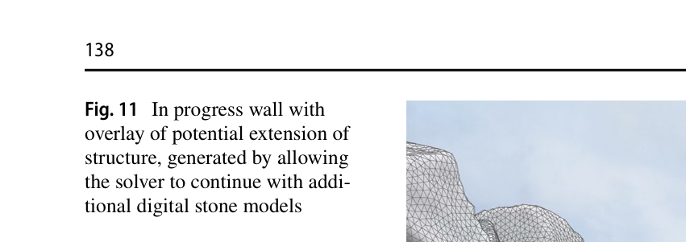
원문 Figure 11 · PDF p.12 — Fig. 11 In progress wall with overlay of potential extension of structure, generated by allowing the solver to continue with addi- tional digital stone models